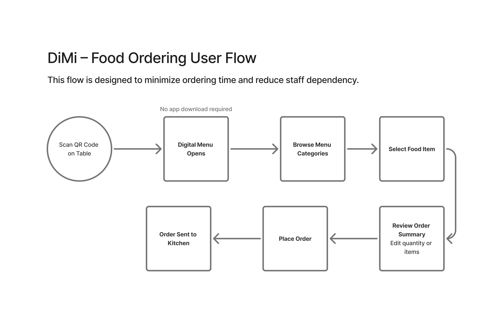
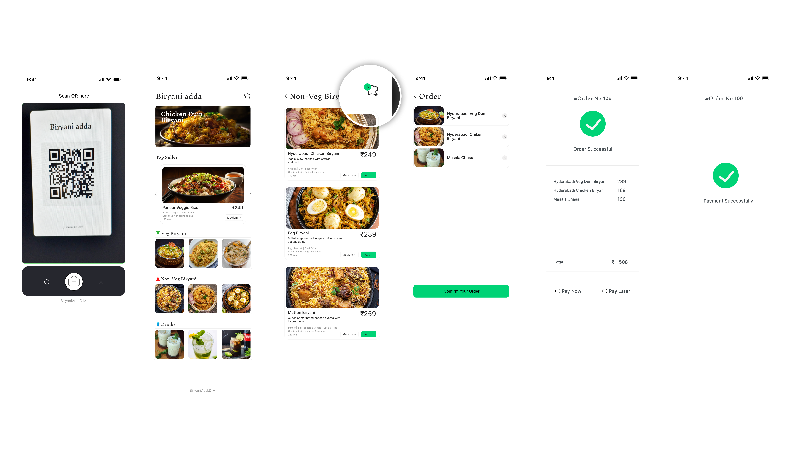

Wireframing
Low-fidelity wireframes were created to define layout structure, content hierarchy, and user flow before moving to visual design. This helped validate usability early and avoid unnecessary UI changes later.

A QR-based digital menu experience designed to reduce order time, minimize staff dependency, and improve restaurant efficiency.
Traditional restaurant menus slow down ordering, increase staff dependency, and create hygiene concerns—especially during peak hours.
Design a digital menu experience that is fast, intuitive, and accessible, while reducing operational load for restaurants.
• Restaurant customers (18–45 years)
• Small to medium restaurant owners
The design process focused on understanding user pain points, simplifying the ordering journey, and reducing cognitive load.

Low-fidelity wireframes were created to define layout structure, content hierarchy, and user flow before moving to visual design. This helped validate usability early and avoid unnecessary UI changes later.
Scan QR → Browse menu → Add items → Place order

| Metric | Before | After DiMi |
|---|---|---|
| Order Time | 8–10 minutes | 3–4 minutes |
| Staff Dependency | High | Low |
| Ordering Errors | Frequent | Minimal |
The interface follows a minimalist design approach with clear hierarchy, simple navigation, and easy readability.

DiMi delivers a faster, cleaner, and more efficient ordering experience, improving both customer satisfaction and restaurant operations.